Three days of food, culture, and friendship — finally meeting in person after months of chatting.三天的美食、文化与友谊 — 终于从屏幕里走到现实中。
Six dynasties chose Nanjing as their capital, including the Eastern Wu, Eastern Jin, and Ming Dynasty. The Ming Dynasty built the world's longest city wall here — 35km, still standing after 600 years. The city was also the capital of the Republic of China from 1912 to 1949. Sun Yat-sen was inaugurated as the first president here. Layers upon layers of history, from the Three Kingdoms to modern China.东吴、东晋、宋、齐、梁、陈六个朝代在此建都。明朝在此修建了世界上最长的城墙——全长35公里，600年后依然屹立。南京也是中华民国首都（1912-1949），孙中山在此就任临时大总统。从三国到近代，历史在这里层层叠叠。
Purple Mountain (Zijinshan) rises in the east, the Yangtze River flows through the north, Xuanwu Lake sits in the heart of the city, and the Qinhuai River winds through the old town. Mountains, water, city walls, and forests blend together seamlessly. In summer, the lotus flowers on Xuanwu Lake are breathtaking. The French plane trees lining the city streets have been growing for over a century, creating natural green tunnels everywhere.紫金山雄踞城东，长江奔流城北，玄武湖镶嵌城心，秦淮河蜿蜒老城。山、水、城、林浑然一体。夏日玄武湖荷花盛开，美不胜收。遍布全城的法国梧桐已有百年历史，形成天然绿色隧道。
Nanjing is called the "Duck Capital" — its people eat over 100 million ducks a year. Saltwater duck (yanshui ya) has over 2,000 years of history and is considered one of China's greatest cold dishes. The city's cuisine is subtle and savoury — not spicy like Sichuan, not sweet like Suzhou. Nanjing snacks are legendary: soup dumplings, pidu noodles, tangbao, and the bustling Confucius Temple snack street.南京被称为"鸭都"——南京人每年吃掉超过一亿只鸭子。盐水鸭有两千多年历史，被认为是中国最好的冷菜之一。南京菜细腻鲜美——不像四川那么辣，不像苏州那么甜。南京小吃更是传奇：小笼包、皮肚面、汤包，还有热闹的夫子庙小吃街。
Nanjing is one of China's "Four Furnaces" (si da huolu). In July, temperatures regularly hit 32-35°C with humidity above 80%. The heat index can feel like 40°C+. Edinburgh's summer averages 15-22°C — this is a massive difference. The locals survive by hiding in air-conditioned spaces during midday (12-3pm) and coming alive again in the cooler evenings. We'll do the same.南京是中国"四大火炉"之一。七月气温常达32-35°C，湿度超过80%，体感温度可达40°C以上。爱丁堡夏天平均15-22°C——差距巨大。本地人靠中午（12-15点）躲在空调房里避暑，傍晚凉快了再出来活动。我们也这样安排。
Bullet train, ~1h 40min. I'll be waiting at the station.高铁约1小时40分钟，我会在车站等你。
Taxi back to the apartment in Pukou — about 30 to 40 minutes.打车回浦口公寓——约30到40分钟。
🚕 Taxi · 30~40 minQuick stop at the police station to register. I'll learn something about that and help you finish it.派出所登记，例行手续，我来搞定。
After a long journey — rest, chat, enjoy tea together.长途跋涉后先休息。我泡壶茶。
First taste of Nanjing — some local food near the apartment.第一顿南京菜——盐水鸭、小笼包等。
Walk off dinner. Nothing ambitious — just enjoy the evening air.饭后消食，随便走走。
Soup dumplings, youtiao, jianbing, soy milk — a proper Chinese start.小笼包、油条、煎饼、豆浆——正宗中式早餐。
Pick from the Outdoor Pool below. Morning = coolest time for outdoor sights.从室外活动池选择。上午是最凉快的户外时间。
Find a local restaurant. Try different dishes from yesterday.在景点附近找家当地餐馆，尝尝不一样的菜。
Peak heat hours. Back to the apartment or find a cool indoor spot.最热时段，回公寓或找室内凉快的地方。
Museum, shopping mall, or explore a neighbourhood.博物馆、商场或逛逛街区。
Private room, big screen, sing freely. 1-2 hours.包厢、大屏、放声歌唱。1-2小时。
I'll try to cook some simple Chinese dishes. I also have a surprise planned for the evening — you'll find out when the time comes.我做几个家常菜。晚上还有一个小惊喜——到时候你就知道了。
I've been preparing something special since I made these plans. You'll discover it tonight. Then: movie, games, tea, music, calligraphy — whatever we feel like.从我们开始聊天那天起，我就在准备一样东西。今晚你会看到。之后：电影、游戏、品茶、音乐、书法——随心所欲。
Try something different — maybe pidu noodles or another local favourite.换个花样——皮肚面或其他本地美食。
If we're feeling energetic, pick from the Outdoor Pool. Or some parks are relatively near the apartment.有精力就从室外活动池选一个，否则去咖啡馆坐坐。
More Nanjing food — working through the menu.继续解锁南京美食。
Tea, coffee, music, conversation, calligraphy. The slow moments matter most.品茶、咖啡、音乐、聊天、书法。慢时光最珍贵。
Out or home-cooked — we'll decide on the day.出去吃或在家做——当天再定。
Games, movies, tea, chatting. No agenda.游戏、电影、品茶、聊天。随心所欲。
And my second discipline can be done at this time.
Our last morning. Take it slow, enjoy the food.最后一个早晨，慢慢来。
I'll help make sure nothing gets left behind.帮你检查别落下东西。
Goodbye for now —hope meet again. 🤝暂别——但不是永别。🤝
The world's largest surviving ancient city gate — Zhonghua Gate has three layers of defence with 27藏兵洞 (hidden soldier chambers) inside. Walk atop the 600-year-old Ming Dynasty city wall, which stretches 35km in total — the longest ancient city wall on Earth. The panoramic view from the top is stunning: you can see the modern city skyline on one side and the ancient rooftops on the other. A gentle walk, not strenuous, with lots of photo opportunities.世界现存最大的古城门——中华门有三层防御结构，内藏27个藏兵洞。漫步600年明朝城墙，全长35公里，世界最长古城墙。顶部全景视野震撼：一边是现代城市天际线，一边是古老屋顶。平缓步行，不费力，拍照绝佳。
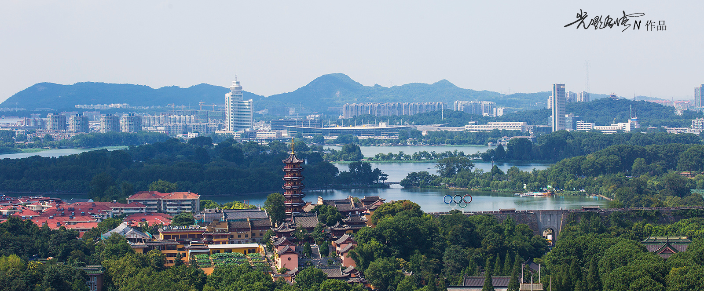
A beautiful lakeside park right next to the ancient city wall. Flat paths, no climbing — perfect for a relaxed stroll. In summer, the lake is covered with lotus flowers, creating a stunning pink-and-green landscape. Five islands connected by bridges, with willow trees, pavilions, and views of Zijin Mountain in the distance. The park is free to enter and is where locals go for morning exercises and evening walks.紧邻古城墙的美丽湖滨公园。平坦步道，无需爬山——适合悠闲漫步。夏日湖面荷花盛开，粉绿相映，美不胜收。五座小岛由桥梁相连，柳树成荫、亭台楼阁、远眺紫金山。免费入园，是本地人晨练和散步的好去处。
The historic heart of old Nanjing, centred around a Confucius Temple first built in 1034. The Qinhuai River flows through the area — Tang poet Du Mu wrote about its moonlit beauty over 1,000 years ago. Today it's a lively district with traditional architecture, lantern-lit streets, boat rides on the river, and one of Nanjing's best snack streets. Can be touristy, but the evening atmosphere with lanterns reflected in the water is genuinely magical.南京老城的历史核心，以始建于1034年的夫子庙为中心。秦淮河穿城而过——唐代诗人杜牧千年前就写过"烟笼寒水月笼沙"的秦淮月色。如今这里是热闹的街区：传统建筑、灯笼街巷、秦淮游船，还有南京最好的小吃街之一。虽然有些商业化，但夜晚灯笼映水的氛围确实迷人。
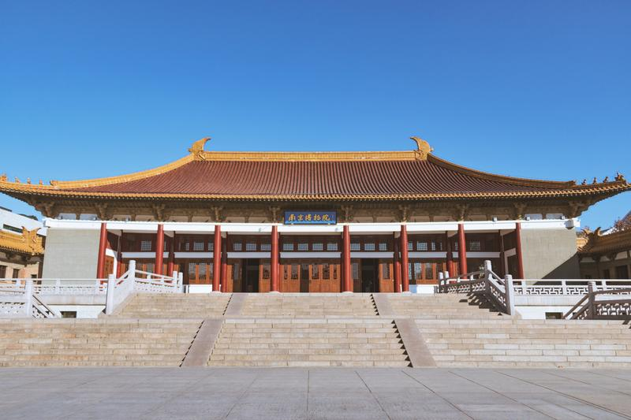
One of China's top 3 museums, alongside Beijing's Palace Museum and Taipei's National Palace Museum. It houses 430,000 artifacts spanning from prehistoric times to the Republic era. Six exhibition halls cover everything from ancient jade and bronze to a recreated 1930s Nanjing street scene you can walk through. Fully air-conditioned — perfect for a hot morning. Free entry, just bring your passport.中国三大博物馆之一（与北京故宫博物院、台北故宫博物院齐名）。馆藏43万件文物，从史前时代到民国。六个展厅涵盖古代玉器、青铜器，还有一个可以走进去的1930年代南京街景复原区。全空调——酷暑天的最佳选择。免费入场，带护照即可。
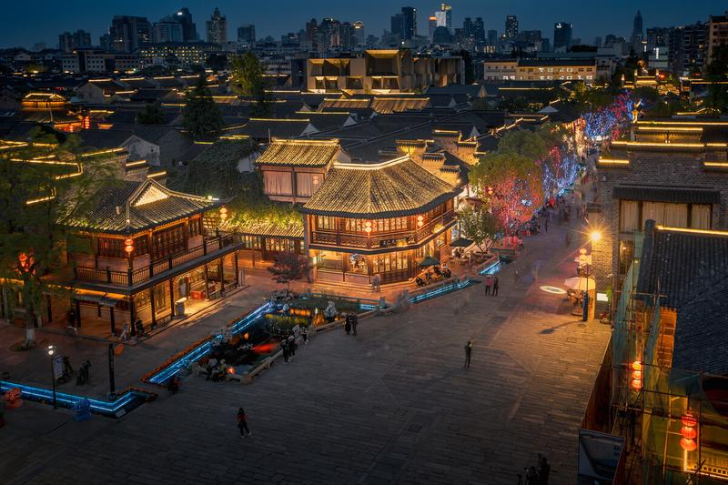
Nanjing's oldest neighbourhood, dating back over 600 years. Grey brick lanes wind between traditional courtyard houses, many now converted into craft shops, galleries, and cosy cafés. Street art murals blend with ancient architecture. Local snacks here are more authentic (and cheaper) than at Confucius Temple. Best explored slowly — every corner has a story. Less crowded, more genuine.南京最古老的街区，历史超过600年。灰砖巷弄在传统四合院之间蜿蜒，许多已改造为手工艺店、画廊和温馨咖啡馆。街头壁画与古老建筑交融。这里的小吃比夫子庙更地道（也更便宜）。慢慢逛——每个角落都有故事。人更少，更真实。
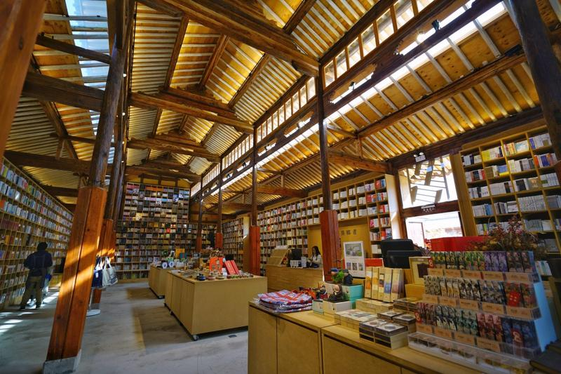
Named "China's most beautiful bookshop" by BBC and CNN. Set in a converted underground car park beneath Wutai Mountain, the space is dramatic — concrete pillars, high ceilings, and a giant cross installation. Browse Chinese and English books, enjoy the atmosphere, and have coffee at the in-house café. A unique cultural experience that's very Nanjing. Nearby, the tree-lined streets of the old university district are perfect for a quiet walk.被BBC和CNN评为"中国最美书店"。坐落在五台山地下车库改造的空间里——水泥柱、高挑天花板、巨型十字架装置。中英文书都有，氛围感十足，还有自带咖啡馆。独特的文化体验，非常南京。附近老校区的林荫道很适合安静散步。
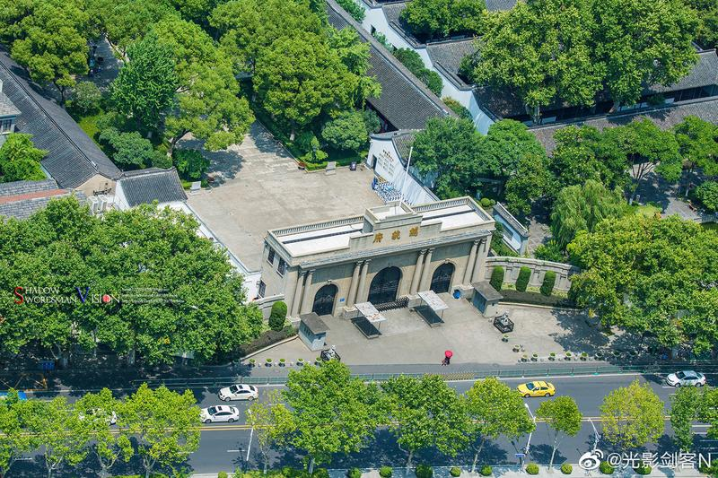
The former headquarters of the Republic of China (1912-1949). Sun Yat-sen was inaugurated here as China's first president. The complex covers 90,000 sqm and includes Western-style government buildings, traditional Chinese gardens with lotus ponds, and a small museum. Walking through the office where history was made — the Xinhai Revolution, the war with Japan, the civil war — is quite moving. Beautiful gardens provide a peaceful contrast.中华民国总统府（1912-1949）。孙中山在此就任中国第一任大总统。占地9万平方米，包括西式政府建筑、中式园林荷塘和小型博物馆。走过那些改变历史的办公室——辛亥革命、抗日战争、内战——令人感慨万千。美丽的园林提供宁静的对比。
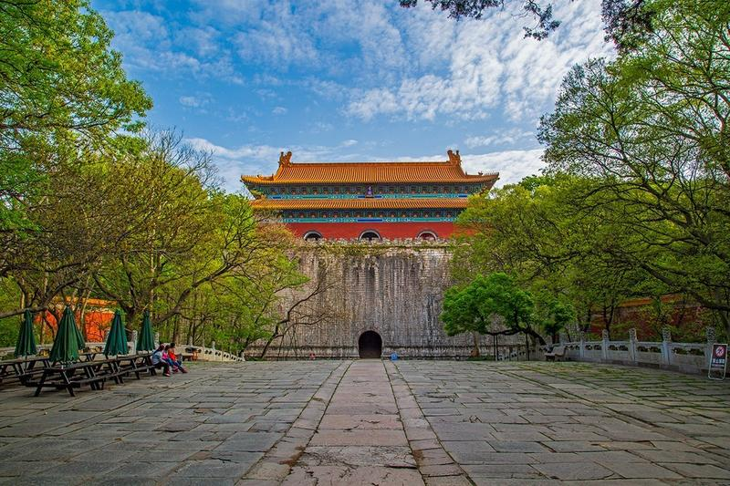
The tomb of Zhu Yuanzhang, the Ming Dynasty's founder who rose from peasant to emperor. Set among forested hills on the south slope of Purple Mountain. The highlight is the 1km Sacred Way (神道) — a path lined with enormous stone animals: lions, elephants, camels, and mythical creatures, each carved from a single block of stone 600 years ago. A UNESCO World Heritage Site. Some walking involved on uneven ground — we'll take it slow. Best combined with a visit to nearby Sun Yat-sen's Mausoleum.明太祖朱元璋之陵墓——一个从农民崛起为皇帝的传奇人物。坐落在紫金山南坡的林间。亮点是1公里长的神道——两旁排列着巨大的石兽：狮子、大象、骆驼和神兽，每尊都是600年前从整块石头雕刻而成。世界文化遗产。有些不平路段需要步行——我们慢慢来。可以和附近的中山陵一起游览。
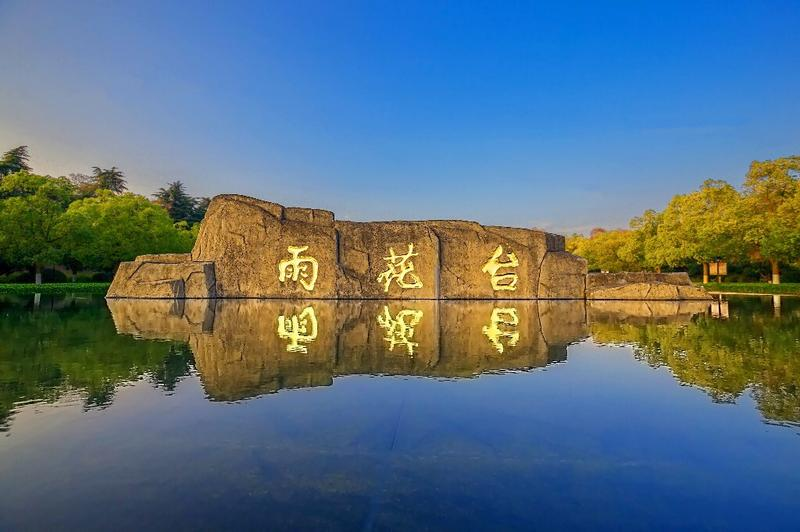
A historic hill and memorial park, famous for its rain flower stones — colourful, naturally polished pebbles found only here. The site has deep historical significance as a memorial to revolutionary martyrs. The park is beautiful and peaceful, with bamboo groves, ancient temples, and a memorial museum. Less crowded than other attractions, and a nice place for a quiet walk. You can pick up rain flower stones as a unique souvenir.南京著名的历史山丘和纪念公园，以雨花石闻名——一种只在这里发现的天然彩色鹅卵石。作为革命烈士纪念地，有深厚的历史意义。公园美丽宁静，竹林、古寺、纪念馆一应俱全。人比其他景点少，适合安静散步。可以捡雨花石当纪念品。
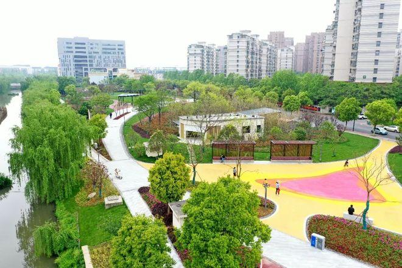
Right next to Mingfa City Plaza, just a 5-minute walk from the apartment. A riverside garden along the Jiqing River with walking paths, benches, and greenery. Perfect for a quick evening stroll — no planning needed, just walk out the door.就在明发城市广场旁边，从公寓步行5分钟。沿吉庆河而建的带状游园，有步道、长椅、绿植。适合饭后随便走走——不用计划，出门就到。
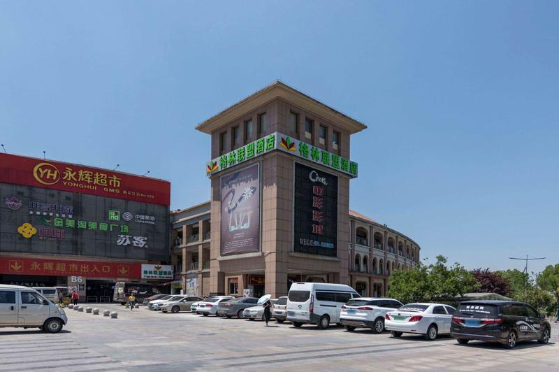
The shopping area around the apartment. Restaurants, convenience stores, fruit shops, and street food. Good for an after-dinner walk to grab a drink or dessert. Everything you need within 10 minutes on foot.公寓周围的商业区。餐馆、便利店、水果店、小吃摊。饭后散步顺便买杯饮料或甜品。步行10分钟内什么都有。
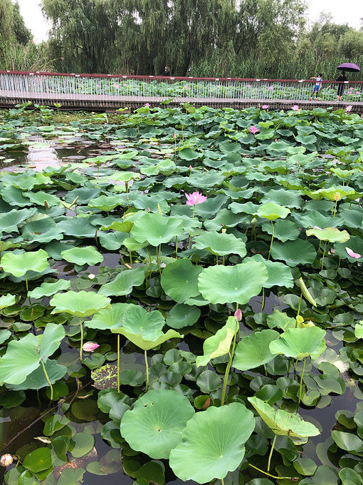
A beautiful wetland park about 2km away. Flat walking paths, lawns for picnics, and rich wetland ecology — birds, plants, and a peaceful lake. Free entry, open 24 hours. Great for a morning walk or evening stroll. One of the best green spaces in Pukou.2公里外的美丽湿地公园。平坦步道、草坪可野餐、湿地生态丰富——鸟类、植物、宁静的湖泊。免费入园，24小时开放。适合晨练或傍晚散步。浦口最好的绿地之一。
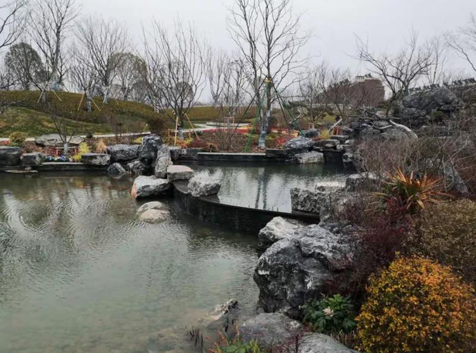
A scenic park about 2.5km away with cherry blossoms, plum flowers, and well-maintained lawns. Gentle paths wind through greenery — perfect for a relaxed walk. Has a children's playground too. Free entry.2.5公里外的景观公园，有樱花、梅花、维护良好的草坪。小径在绿植中蜿蜒——适合悠闲漫步。也有儿童游乐区。免费。
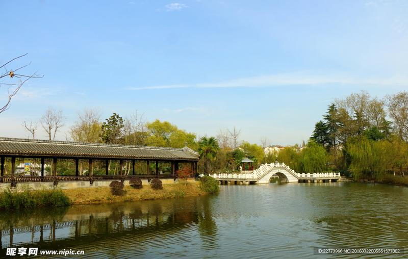
Pukou's classic neighbourhood park, about 3km away. Shaded forest trails, a pond at the base, and fresh air. Very popular with locals for morning exercise. The trails are gentle — not a mountain climb, more of a hillside stroll. Free, open 24 hours.浦口区的老牌公园，3公里外。林荫小道、山脚池塘、空气清新。本地人晨练热门地。步道平缓——不是爬山，更像是山坡散步。免费，24小时开放。
A forest park about 3.5km away, near Taishan Xincun. Open lawns for picnics, forest paths, and clean air. Good for a longer evening walk or a weekend morning outing. The park is well-maintained and not too crowded.3.5公里外的森林公园，靠近泰山新村。开阔草坪可野餐、林间小路、空气清新。适合较长的傍晚散步或周末晨游。维护良好，人不多。
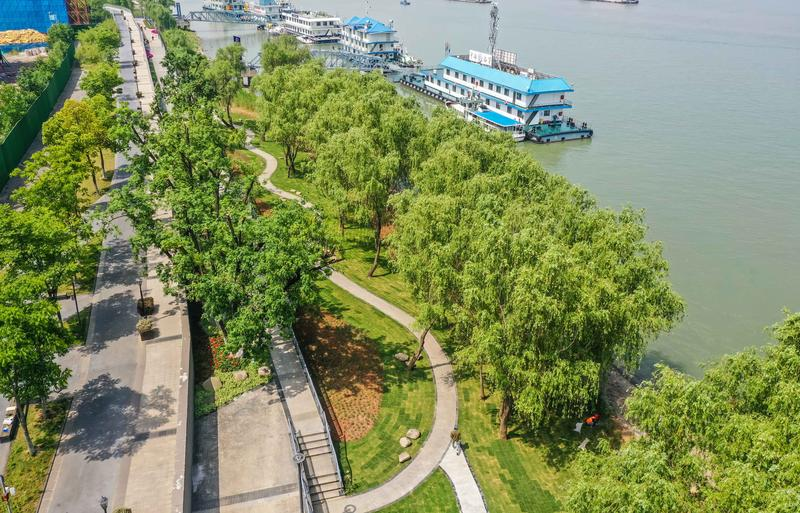
A scenic promenade along the Yangtze River, about 4km away. Watch the river flow, see cargo ships pass, and catch stunning sunsets over the water. The best spot in Pukou for sunset views. Walking paths, benches, and a few cafés nearby. A must-visit for an evening outing.沿长江的景观带，4公里外。看江水奔流、货船驶过、水面上的日落美不胜收。浦口看日落的最佳地点。有步道、长椅、附近有几家咖啡馆。傍晚必去。
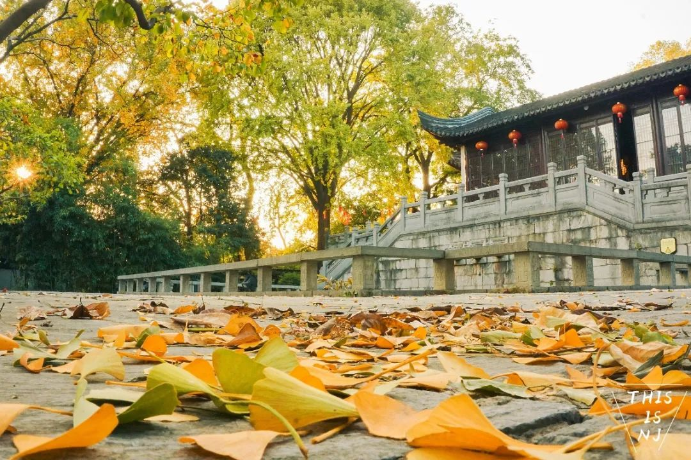
A quiet Buddhist temple about 5km away, originally built in the Tang Dynasty. A peaceful place to escape the city noise, light incense, and enjoy the ancient architecture. Not a tourist trap — a genuine working temple with a calm atmosphere.5公里外的安静佛寺，始建于唐代。远离城市喧嚣的好去处，可以焚香、欣赏古建筑。不是旅游景点——是真正的修行寺庙，氛围宁静。
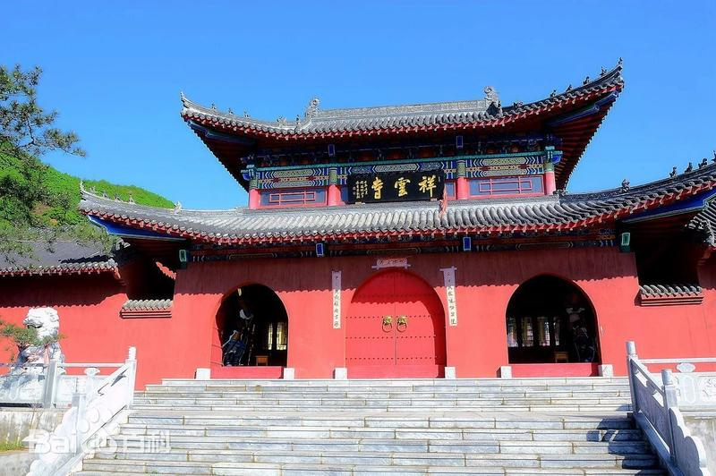
Another historic temple in Pukou, about 6km away. Known for its well-preserved Buddhist architecture and tranquil environment. A good option if you want a quiet cultural outing without the crowds of city attractions.浦口另一座古寺，6公里外。以保存完好的佛教建筑和宁静环境闻名。想要安静的文化出游、不想挤人潮的好选择。
Keemun black tea (祁门红茶) from Anhui . No milk, no sugar, just pure tea. I'll learn and try to show you the Chinese way of brewing with a gaiwan (盖碗): warm the cup, add leaves, pour water at the right temperature, and appreciate the aroma before sipping. Tea is central to Chinese culture — it's how we welcome guests and show respect.祁门红茶——19世纪传入英国，成为皇室最爱。不加奶不加糖，纯茶。我教你用盖碗泡茶：温杯、放叶、合适温度注水、先闻香再品茗。茶是中国文化的核心——我们用茶欢迎客人、表达尊重。
Try writing Chinese characters with a pen. I'll show you some of my handwriting and the progress how I do that. Plus, I prepare some nice works, you can have something to take home as a souvenir if you are interested in.用毛笔墨水写汉字。我教你几个有意义的字："福"、"和"、"友"。比看起来难——毛笔柔软、墨水不可预测、每一笔都很讲究。非常解压。而且你还能带回家当纪念品。
Share stories about our lives, cultures, and perspectives. Ask anything — nothing is off limits. About family, work, study, hobbies, daily life, thoughts. These conversations are the real treasure of this trip. We've been chatting online for months, but nothing beats a face-to-face conversation over a cup of tea.分享彼此的生活、文化和观点。什么都聊——家庭、工作、政治、宗教、日常生活、梦想。这些对话才是这趟旅程真正的宝藏。我们在线聊了几个月，但面对面品茶聊天无可替代。
Guqin (古琴), pipa (琵琶), dizi (笛子) — Chinese traditional instruments with thousands of years of history. I'll play some recordings or videos. In return, share some Scottish folk music, or whatever you listen to. Maybe we'll find surprising connections between East and West.古琴、琵琶、笛子——中国传统乐器，千年历史。我放一些录音或视频给你听。你也分享苏格兰民谣或你喜欢的音乐。也许我们会发现东西方之间意想不到的联系。
See what modern games look like. Some AAA game, or some casual co-op games we can play together. Even if you're not a gamer, it's worth seeing how far Chinese game development has come.看看现代游戏。3A游戏，或者一些可以一起玩的休闲合作游戏。即使不玩游戏，也值得看看现代游戏发展到什么水平了。
I'll cook some simple Chinese dishes — tomato egg stir-fry (番茄炒蛋), stir-fried shredded potatoes, or dumplings. Maybe teach you a recipe or two. Cooking together is one of the best ways to connect across cultures.我做几道简单中国菜——番茄炒蛋、宫保鸡丁（不放辣）、或者包饺子。也许教你一两道菜。一起做饭是跨文化交流最好的方式之一。
Chinese cinema has some incredible films. The Wandering Earth (流浪地球) — China's sci-fi blockbuster. Ne Zha (哪吒) — animated mythological epic. Or something visually stunning like Shadow (影) by Zhang Yimou. we'll pick something with great visuals that we can enjoy together .中国电影有不少佳作。《流浪地球》——中国科幻大片。《哪吒》——动画神话史诗。或者张艺谋的《影》——视觉震撼。我挑一部画面精美、你会喜欢的。
KTV (karaoke) is huge in Asia. We'll get a private room with a big screen, comfy sofas, and a massive song library — English songs included. Sing freely, no judgement. It's about having fun, not being good. We can have a try together. 1-2 hours is perfect. KTV在亚洲非常流行。我们要一个包厢——大屏、舒适沙发、海量曲库（包括英文歌）。放声歌唱，没人评判。重在好玩，不在唱得好。大多数英国人没试过——你会玩得很开心。1-2小时刚好。
Chinese beer (Tsingtao, Snow), rice wine, orbaijiu (白酒), the infamous Chinese spirit at 40%+ ABV. Just a little will be fine. Sit on the balcony, enjoy some food, and talk about life. Good conversations happen late at night with a drink in hand.中国啤酒（青岛、雪花）、米酒，或者如果你够胆——白酒，中国烈酒，50度以上。坐在阳台上，看城市灯火，聊人生。最好的对话发生在深夜，手里端着一杯。
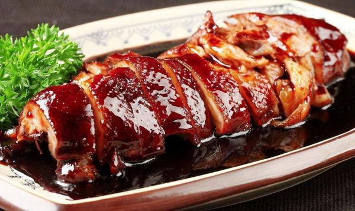
Nanjing's #1 dish. The duck is brined in salt water, then gently boiled to create incredibly tender, silky meat with a delicate savoury flavour. It's served cold, sliced thin — a refreshing dish even in summer heat. Over 2,000 years of history. Nanjing people eat over 100 million ducks a year. The most famous shop has been making it since the Ming Dynasty.南京第一名菜。鸭子盐水腌制后慢火水煮，肉质细嫩、鲜香淡雅。冷盘上桌、切片——夏天吃也清爽。两千年历史，南京人每年吃掉超过一亿只鸭子。最有名的店从明朝就开始做了。
Paper-thin skin wrapped around a ball of hot, savoury soup with minced pork. The trick: bite a small hole, sip the soup first, then eat the dumpling. Dip in vinegar with shredded ginger. The soup inside can be scalding hot — patience! A breakfast staple across Nanjing, found on practically every street corner.薄皮包裹着滚烫鲜美肉汤。吃法：先咬一小口，吸汤，再吃皮和馅。蘸醋加姜丝。里面汤汁很烫——要有耐心！南京早餐标配，几乎每条街都有。
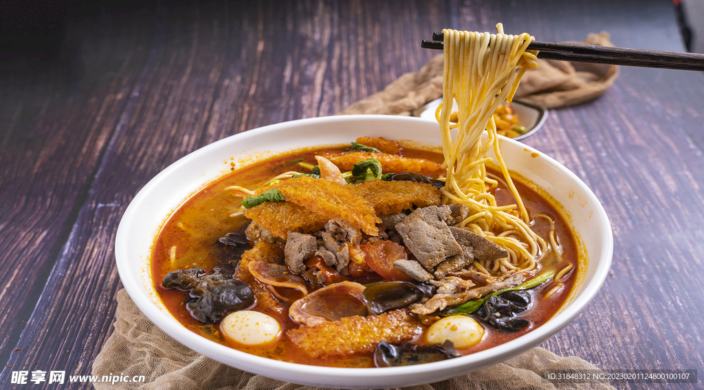
Nanjing's signature noodle dish — pidu (fried pork skin, light and puffy) in a rich, slow-cooked broth with vegetables, meat, and handmade noodles. Each bowl is enormous and incredibly filling. The pidu absorbs the broth like a sponge, creating a unique texture. Only found in Nanjing — you won't find this anywhere else in China. A proper local experience.南京特色面——皮肚（炸猪皮，轻盈蓬松）配上浓郁慢炖汤底、蔬菜、肉和手擀面。每碗分量巨大，非常管饱。皮肚像海绵一样吸满汤汁，口感独特。只有南京有——全中国其他地方吃不到。正宗本地体验。
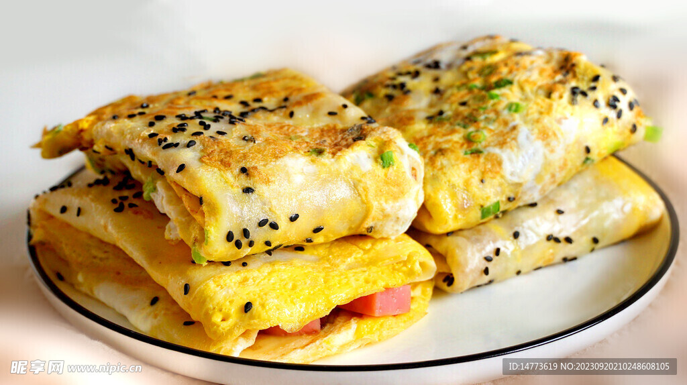
The ultimate Chinese street breakfast. A thin batter spread on a hot griddle, topped with egg, scallions, cilantro, a crispy fried cracker (baocui), and sauces — sweet bean sauce, chilli sauce, and sesame. Everything folded into a perfect handheld package. Made fresh in front of you in under 2 minutes. Crispy, soft, savoury, and slightly sweet all at once.终极中国街头早餐。面糊摊在热铛上，加上鸡蛋、葱花、香菜、脆饼（薄脆），再刷酱——甜面酱、辣酱、芝麻酱。折叠成一个完美的手拿包。2分钟内现场做好。同时酥脆、柔软、咸鲜、微甜。
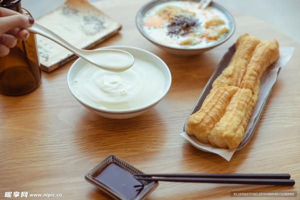
The classic Chinese breakfast combo. Youtiao is a long fried dough stick — crispy golden outside, airy and fluffy inside. Dip it in warm soy milk (sweet or savoury, your choice) or in congee (rice porridge). Millions of Chinese people start every morning this way. Simple, comforting, and delicious.经典中式早餐搭配。油条是长长的炸面棍——外面金黄酥脆，里面蓬松柔软。蘸温热豆浆（甜的或咸的，你选）或蘸稀饭。千百万人每天这样开始新的一天。简单、温暖、美味。
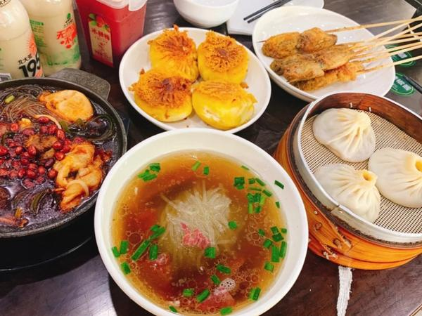
The bigger cousin of soup dumplings. Tangbao are large soup-filled buns served with a straw — yes, a straw. You poke it in and sip the rich, savoury broth first, then eat the skin and meat filling. It's a fun, unique experience. Found at specialty shops around the city.小笼包的大号版本。汤包是大号汤汁包子，配吸管——没错，吸管。先插进去吸鲜美肉汤，再吃皮和馅。有趣又独特的体验。全市特色店都有。
Nanjing in July is 32-35°C with 80%+ humidity. It feels much hotter than the number suggests — the heat index can reach 40°C+. Edinburgh's summer is 15-22°C. This is a massive difference. Take it seriously: rest during peak heat (12-3pm), drink lots of water, and don't push yourself. Heat exhaustion is real.南京七月32-35°C，湿度80%以上。体感温度远高于数字——可达40°C以上。爱丁堡夏天15-22°C——差距巨大。认真对待：最热时段（12-15点）休息，每天喝2-3升水，别逞强。中暑是真的会发生的。
Light, breathable clothes — cotton or linen. Shorts and t-shirts are fine everywhere. Bring a light jacket for the metro and restaurants (strong A/C can feel cold). Comfortable walking shoes are essential. One smart-casual outfit for restaurants if you like, but Nanjing is very relaxed about dress codes. An umbrella is useful — sudden summer rain showers are common.轻薄透气衣物——棉或麻。短袖短裤到处都行。带件薄外套（地铁和餐馆空调很冷）。舒适的步行鞋必备。想的话带一套半正式的衣服，但南京对穿着很随意。雨伞有用——夏天常有阵雨。
Nanjing metro is clean, efficient, and fully air-conditioned. Buy a single-journey ticket at the machine (English available) or use Alipay/WeChat Pay QR code. Trains run every 3-5 minutes. Announcements are in both Chinese and English. I'll navigate — you just follow. The metro is our best friend for getting around.南京地铁干净、高效、全空调。在机器上买单程票（有英文界面）或用支付宝/微信扫码。3-5分钟一班。中英双语报站。我来导航——你跟着就行。地铁是我们出行的最好朋友。
China runs on mobile payment — Alipay and WeChat Pay are used everywhere, from street vendors to restaurants. Most large stores and hotels also accept Visa/Mastercard, but small shops and street food stalls don't. And I'll cover all our expenses.中国以移动支付为主——支付宝和微信支付无处不在，从路边摊到餐馆。法律规定必须收现金，但实际上很少用。我帮你用国际银行卡绑定支付宝。大商场和酒店也接受Visa/Mastercard，但小店和小吃摊不行。
In China, a lot of foreign software might not work, so you'll need to have a VPN ready.
As for the internet, we won't have any problems when we're at the apartment or when we're together.
Foreign visitors need to register at the local police station within 24 hours of arrival in China. Since we're staying at the apartment, I'll learn something about that and take you to the nearby station to fill a form. 外国人必须在到达中国后24小时内到派出所登记。住酒店的话酒店会代办。住我家的话，我带你去附近派出所——很快，就填个表。带护照。这是法律要求，不是可选的。
Since we first started making plans weeks ago, I've been gathering a few things for you. Nothing extravagant — just small tokens that I hope you'll appreciate. You'll discover them when the time is right.从几个月前我们开始聊天起，我就在悄悄准备一些东西。不贵重——只是一些小小心意。到时候你就会知道。